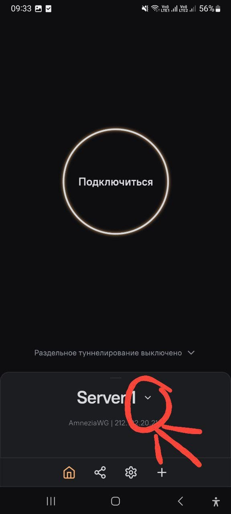
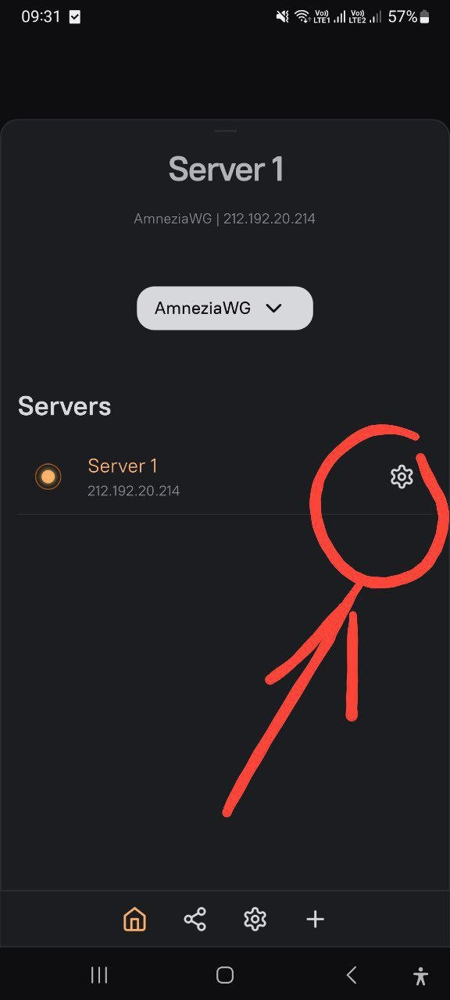
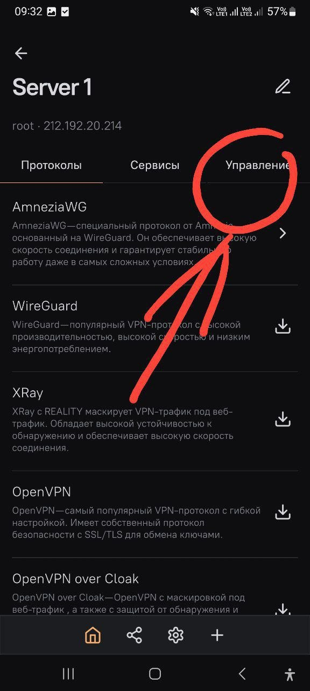
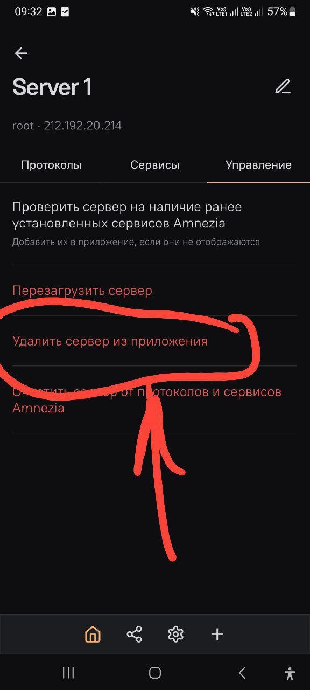
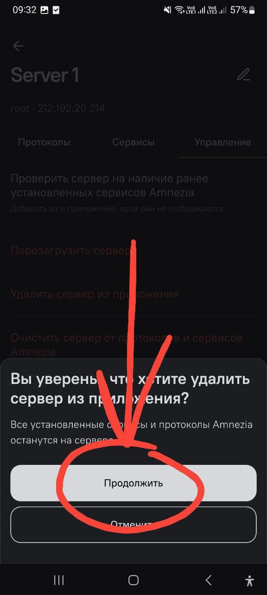
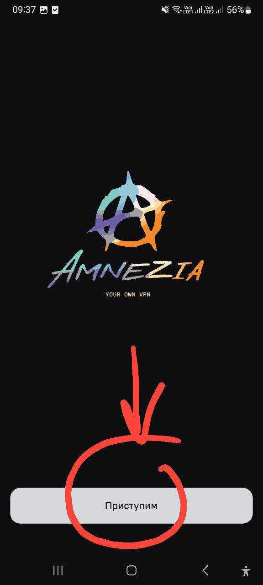
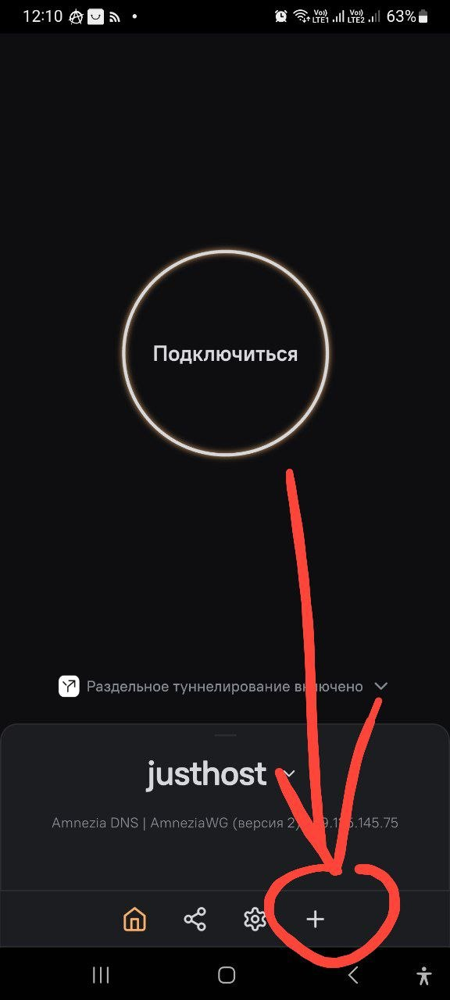
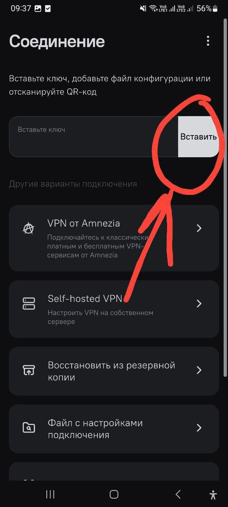

Инструкция на случай, если текущий сервер перестал работать. Есть два пути: полностью удалить старый сервер и настроить заново, либо просто добавить новый — короче и быстрее.
Полная переустановка
Если старый сервер не подключается и его нужно сначала убрать из приложения.






Короткий способ
Старый сервер удалять не обязательно — можно просто добавить новый рядом с ним.

Подключение нового сервера
